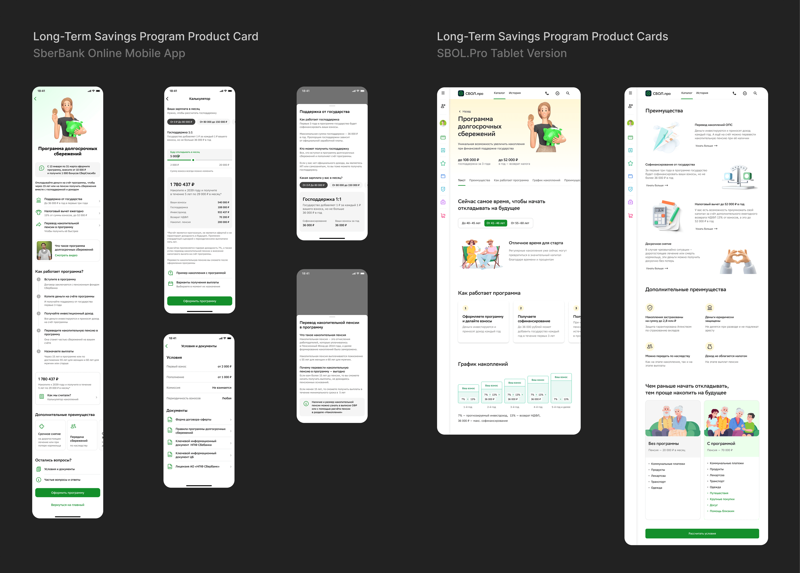
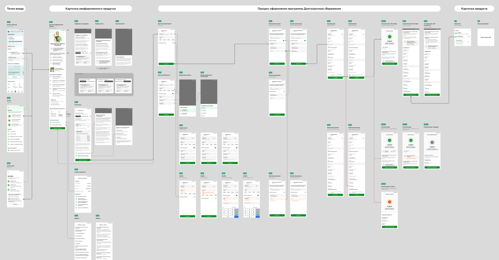
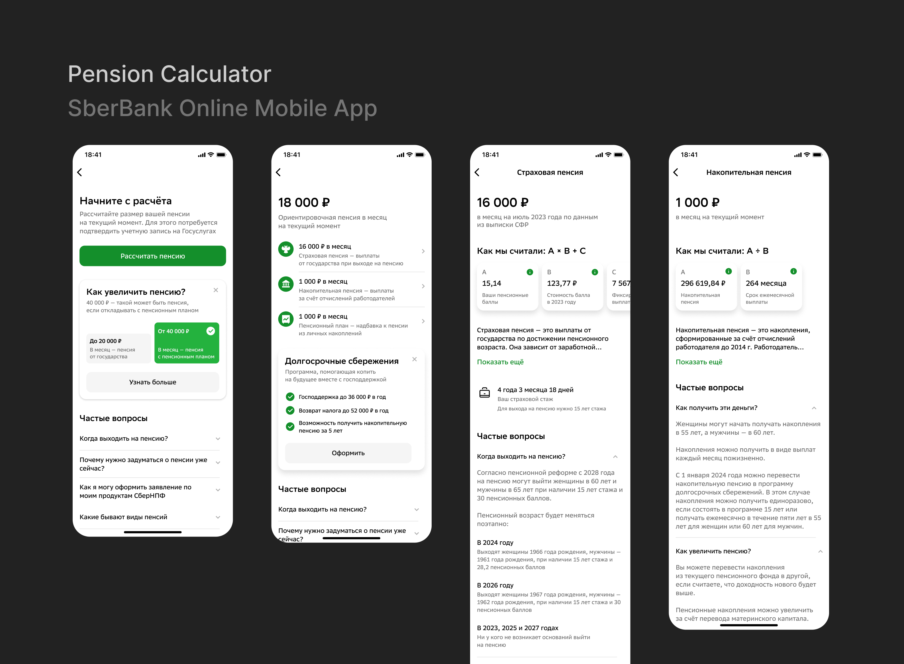

2023 to 2024, working on pension-related services inside the Sber ecosystem.
Sber. Pension Products Experience

Overview
From 2023 to 2024, I worked on pension-related products within the Sber ecosystem. My responsibilities included both customer-facing services in the SberBank Online mobile app and internal tools for bank employees.
The main goal was not only to sell pension products but also to improve users' financial awareness, help them plan their future income, and encourage long-term saving habits.
During this period, I participated in the launch of the new Long-Term Savings Program, designed the program dashboard and management services, and worked on a complete redesign of the pension calculator service.
Launching the Long-Term Savings Program
Key screens

Description
In 2024, the Long-Term Savings Program was introduced to the market, and for Sber its launch was a strategically important initiative. The product was completely new and required building the user experience from scratch.
My task was not only to design the enrollment flow but also to create the experience users would have after joining the program, including the dashboard and core management services.
Goal
Create a clear pension services ecosystem that helps users
understand their situation, estimate future income, enroll
in savings programs, and manage their savings afterward.
- Designed the enrollment flow for the new Long-Term Savings Program.
- Created the program dashboard and core savings management services.
- Designed service flows for bank employees and interfaces inside SBOL.Pro.
- Built interactive prototypes and participated in UX research before implementation.
- Focused on explaining a complex financial product in simple language and reducing cognitive load.
The research showed that users first needed help understanding the pension system itself and the importance of long-term financial planning, not just a description of the new product.
Scenario

Redesigning the Pension Calculator
Key screens

Description
The pension calculator helps users estimate their future retirement income using government data and information about their existing pension products.
Research showed that the current version of the service did not provide users with a complete picture of their retirement savings. There was no single estimate of future income, users did not understand the differences between pension types, and educational content was limited.
Main challenge
Explain a complex financial topic to users who usually have
little interest in retirement planning before reaching
retirement age.
- Added an introductory educational section about the pension system.
- Explained in advance why government data was required.
- Combined different pension payments into a single monthly income estimate.
- Created educational materials about pension types and how they work.
- Added answers to common questions and pathways to savings products.
As a result, the service became not only a calculation tool but also an educational platform that helps users better understand their financial future and the value of additional retirement savings.
Scenario

Working on pension services showed me that users often avoid financial products not because they cannot use them, but because they do not understand their value.
One of the most important responsibilities of a product designer is not only creating intuitive interfaces but also helping users make informed financial decisions.